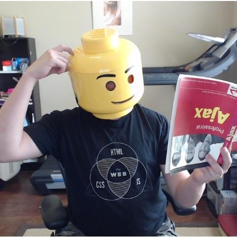

Schedule
Join us 1:00 p.m. - 5:00 p.m. (EST), February 10-12, 2016.- Day One
- Day Two
- Day Three

5 Tips To Improve Your JavaScript, with ES6
Derick Bailey
Design for Reactive Interfaces
Dominic Nguyen
NoSQL Injection in Modern Web Applications
Pete Corey
Using React and CSS Modules to make super fancy reusable components
Ramsay Lanier
Using GraphQL As The Core Data Layer
Arunoda Susiripala
Building Content-Oriented Sites with React
Karl DanningerDelivering High Quality Features, Faster
Sam Hatoum
Writing DDP APIs to Link Realtime Apps
Ian Serlin
When the world is in "Flux", you'll be fine.
Abhi AiyerFinding the Holy Grail of MVP Stacks
Ben Strahan